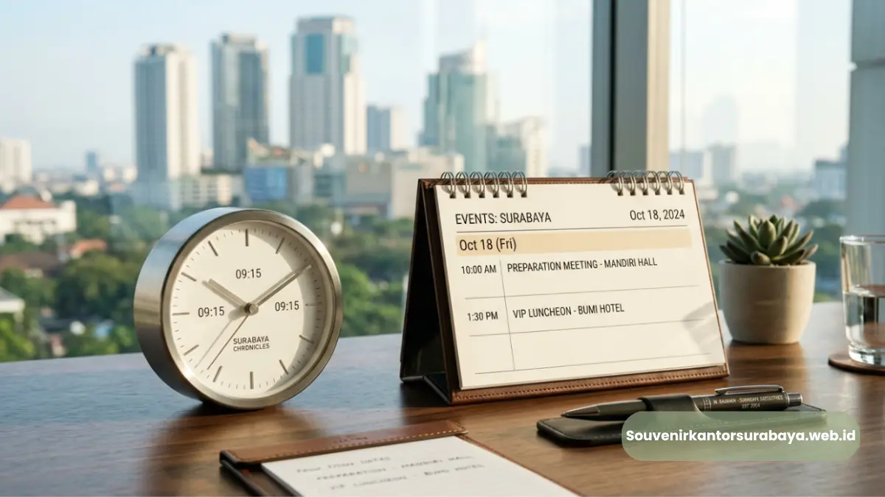

Waktu tepat mencari souvenir acara kantor di Surabaya adalah minimal dua hingga empat minggu sebelum hari acara.
Waktu tepat mencari souvenir acara kantor di Surabaya adalah minimal dua hingga empat minggu sebelum hari acara, tergantung jenis produk dan jumlah pesanan yang dibutuhkan. Perencanaan sejak awal membuat proses produksi dan pengiriman berjalan lebih lancar tanpa risiko keterlambatan.
- Jadwal pemesanan souvenir idealnya disusun sejak tahap perencanaan acara dimulai
- Produk dengan proses custom logo umumnya membutuhkan waktu produksi lebih panjang
- Pemesanan mendekati hari acara berisiko menimbulkan keterbatasan pilihan produk
- Menyusun timeline pemesanan membantu perusahaan menghindari kepanikan menjelang acara
Mengapa Waktu Pemesanan Souvenir Acara Kantor Penting Diperhatikan?
Waktu pemesanan souvenir acara kantor penting diperhatikan karena setiap produk memiliki proses produksi berbeda, mulai dari pemilihan bahan hingga pencetakan logo perusahaan. Semakin kompleks proses produksinya, semakin panjang waktu yang dibutuhkan.
Acara korporat seperti seminar, gathering, atau rapat kerja biasanya sudah direncanakan jauh hari sebelumnya.
Namun, pengadaan souvenir sering kali menjadi bagian yang terlewat dalam checklist persiapan acara karena dianggap sebagai elemen pendukung, padahal proses di baliknya membutuhkan koordinasi yang tidak sebentar.
Ketika souvenir dipesan terlalu dekat dengan tanggal acara, tim penyedia harus bekerja dengan waktu terbatas untuk produksi, quality control, hingga pengiriman.
Kondisi ini berpotensi memengaruhi hasil akhir, baik dari sisi kerapian cetakan logo maupun kesesuaian jumlah barang dengan kebutuhan acara.
Berapa Lama Waktu Produksi Souvenir Acara Kantor Umumnya Dibutuhkan?

Mengetahui estimasi waktu produksi membantu agar acara bisa berjalan lancar tanpa kepanikan di akhir waktu.
Waktu produksi souvenir acara kantor umumnya bervariasi tergantung jenis produk, jumlah pesanan, dan kompleksitas desain logo yang akan dicetak. Produk dengan proses cetak sederhana biasanya lebih cepat selesai dibanding produk dengan detail custom yang rumit.
Beberapa faktor yang memengaruhi durasi produksi antara lain:
- Jenis material produk, misalnya kayu, logam, atau tekstil yang memiliki proses berbeda
- Teknik pencetakan logo, seperti sablon, ukir, atau bordir yang membutuhkan waktu pengerjaan berbeda
- Jumlah unit yang dipesan, karena pesanan dalam skala besar membutuhkan waktu produksi lebih panjang
- Kompleksitas desain, termasuk jumlah warna dan detail logo yang harus direplikasi secara presisi
Dengan mempertimbangkan faktor-faktor tersebut sejak awal, perusahaan dapat menyusun estimasi waktu yang lebih realistis sebelum menentukan tanggal deadline pemesanan.
Apa Risiko Memesan Souvenir Acara Kantor Terlalu Mendekati Hari Acara?
Risiko memesan souvenir acara kantor terlalu mendekati hari acara adalah terbatasnya pilihan produk, minimnya waktu untuk revisi desain, dan kemungkinan keterlambatan pengiriman yang dapat mengganggu jalannya acara.
Beberapa konsekuensi yang umum terjadi jika pemesanan dilakukan mepet waktu:
- Pilihan produk menjadi terbatas karena stok bahan baku tertentu tidak selalu tersedia dalam waktu singkat
- Waktu revisi desain logo menjadi sangat sempit sehingga risiko kesalahan cetak meningkat
- Proses pengiriman harus dipercepat, yang berpotensi menambah biaya tambahan
- Tim penyelenggara acara harus menghadapi tekanan waktu yang seharusnya bisa dihindari
Kondisi ini bisa dihindari dengan menyusun jadwal pemesanan yang realistis sejak tahap awal perencanaan acara.
Baca Juga
Bagaimana Menyusun Jadwal Pemesanan Souvenir Acara Kantor yang Aman?
Jadwal pemesanan souvenir acara kantor yang aman disusun dengan menghitung mundur dari tanggal acara, memberi ruang waktu untuk produksi, quality control, dan pengiriman ke lokasi acara.
Jadwal pemesanan souvenir acara kantor yang aman disusun dengan menghitung mundur dari tanggal acara, memberi ruang waktu untuk produksi, quality control, dan pengiriman ke lokasi acara.
Berikut langkah yang bisa diterapkan dalam menyusun jadwal pemesanan:
Tentukan Tanggal Acara Terlebih Dahulu
Tanggal acara menjadi titik acuan utama untuk menghitung mundur seluruh tahapan pemesanan souvenir, mulai dari konsultasi produk hingga pengiriman akhir.
Alokasikan Waktu untuk Konsultasi dan Desain
Sebelum produksi dimulai, dibutuhkan waktu untuk mendiskusikan jenis produk, kuantitas, dan desain logo yang akan digunakan agar hasil sesuai dengan identitas perusahaan.
Sisakan Waktu untuk Quality Control
Tahap pemeriksaan kualitas produk sebelum dikirim penting untuk memastikan seluruh souvenir memenuhi standar sebelum diserahkan kepada tamu undangan.
Perhitungkan Waktu Pengiriman ke Lokasi Acara
Waktu pengiriman perlu disesuaikan dengan lokasi acara di Surabaya agar souvenir tiba tepat waktu tanpa terburu-buru pada hari pelaksanaan.
Menentukan waktu tepat untuk mencari souvenir acara kantor di Surabaya sebaiknya dilakukan sejak tahap awal perencanaan acara agar seluruh proses produksi dan pengiriman berjalan lancar.
Semakin awal pemesanan dilakukan, semakin banyak pilihan produk dan waktu penyesuaian desain yang tersedia.

Hawa Nadira
Tim penulis CorporateGifts ID berfokus pada strategi souvenir kantor, merchandise korporat, dan inovasi brand untuk klien B2B.
Keahlian: Branding perusahaan, produksi souvenir, paket event, desain materi promosi.
Artikel Terkait

Cari Souvenir Acara Kantor di Surabaya, Solusi Ada di Sini
Cari souvenir acara kantor di Surabaya yang elegan, sesuai anggaran, dan siap kirim tepat waktu.
Baca Selengkapnya
Souvenir Kantor Surabaya Eksklusif untuk Branding Bisnis
Souvenir kantor Surabaya adalah merchandise korporat yang dipesan khusus untuk klien, mitra, atau karyawan.
Baca Selengkapnya
Ide Souvenir Kantor Surabaya Elegan untuk Mitra Bisnis
Ide souvenir kantor Surabaya untuk mitra bisnis sebaiknya mengutamakan produk fungsional dengan tampilan elegan.
Baca Selengkapnya